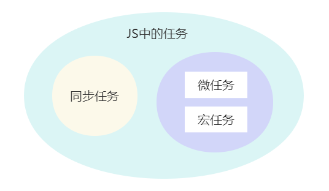

一、Vue 组件的生命周期
什么是生命周期
在 Vue 中每个以
.vue结尾的文件就是一个组件，每个组件都有自己的生命周期生命周期（Life Cycle）是指一个对象从创建 -> 运行 -> 销毁的整个阶段，强调的是一个时间段。
- 我们将 Vue 程序从创建到销毁的整个过程，称为 Vue 的生命周期
Vue程序的创建，表示 Vue 生命周期的开始Vue程序的销毁，表示 Vue 生命周期的结束Vue程序从创建到销毁的整个过程，就是 Vue 的生命周期
什么是生命周期函数（钩子）
每个 Vue 组件实例在被创建时都要经过一系列的初始化过程，如：
- 设置数据监听
- 编译模板
- 将实例挂载到 DOM
- 数据变化时更新 DOM
- …..等
这个过程中会在特定时间点运行一些叫做生命周期钩子的函数，让开发者有机会在特定阶段运行自己的代码。
总结
- 生命周期函数（钩子）：是由 Vue 框架提供的内置函数，会伴随着生命周期，自动按次序执行
- 生命周期函数的作用：允许开发者在特定的时间点，执行某些特定的操作。
Vue 生命周期函数（钩子）
以下是 Vue 组件的生命周期图示，图中从上到下完整的展示了 Vue 组件生命周期的完整过程：
- 创建：设置数据监听（data 数据、计算属性、方法和侦听器）等、编译模板
- 挂载：实例挂载到 DOM
- 更新：数据变化时更新 DOM
- 销毁：组件被卸载
- 图中红色箭头所指向的函数为 Vue 提供的生命周期函数（钩子），这些不同的钩子函数，分别在不同的时期执行。
| 生命周期函数 | 执行阶段 | 说明 |
|---|---|---|
| beforeCreate | 组件创建 | 会在实例初始化完成、props 解析之后、data() 和 computed、methods 等选项处理之前立即调用 |
| created | 组件创建 | 在组件实例处理完所有与状态（数据）相关的选项后调用 |
| beforeMount | DOM 挂载前 | 在组件（DOM）被挂载到页面（或父容器）之前调用。 |
| mounted | DOM 挂载后 | 在组件（本质是 DOM）被挂载到页面（或父容器）之后调用 |
| beforeUpdate | DOM 更新前 | 在响应式数据发生改变后，DOM 被更新之前调用 |
| updated | DOM 更新后 | 在响应式数据发生改变后，导致的虚拟 DOM 重新渲染，并被挂载到页面后调用 |
| beforeUnmount | 组件销毁前 | 在一个组件实例被卸载之前调用 |
| unmounted | 组件销毁后 | 在一个组件实例被卸载之后调用 |

- 生命周期函数的基本使用
使用生命周期函数分以下 2 步：
- 在组件实例中注册对应的生命周期函数
- 把需要执行的代码写在对应的生命周函数内
- 这样 Vue 就会在对应的时间点自动帮我们调用这些生命周期函数执行相应的代码
- 注意： 生命周期函数内部的this指向当前组件实例
<script>
export default {
data() {
return {
message: "Hello Vue!",
};
},
// 在实例初始化之后,进行数据侦听和事件/侦听器的配置之前同步调用
beforeCreate() {
console.log("beforeCreate");
},
// ....
};
</script>
- beforeCreate
- 会在实例初始化完成、
props解析之后、data()和computed、methods等选项处理之前立即调用。 - 在这个生命周期函数中，我们是没有办法访问到
data中的属性，以及methods中的方法等其它选项的数据
- created
created生命周期函数会在在组件实例处理完所有与状态（数据）相关的选项后调用。created生命周期函数调用时，响应式数据、计算属性、方法和侦听器等内容已经设置完成。所以我们可以在这个函数中访问到组件的数据，计算属性，方法等。- 此阶段挂载还未开始，所以这个阶段我们没有办法访问组件实例的
DOM（如：$el属性还不可用）$el为组件实例的属性，用来获取该组件实例管理的DOM根节点
<script>
export default {
data() {
return {
message: "Hello Vue",
arr: [1, 2, 3, 4],
};
},
methods: {
update() {
console.log("Hello Vue3");
},
},
created() {
// -----以下内容可以正常访问到-----
// 访问组件实例的属性
console.log(this.message); // Hello Vue
// 访组件实例的方法
this.update(); // Hello Vue3
// ------以下内容访问不到 -----
// 此时虚拟DOM还没有挂载到页面变成真实DOM，所以访问不到
const div = document.querySelectorAll(".box");
console.log(div); // [ ]
// 此时挂载阶段还未开始，因此 $el 属性仍不可用
console.log(this.$el); // null
},
};
</script>
<template>
<div class="box">
<ul>
<li v-for="item in arr">{{ item }}</li>
</ul>
</div>
</template>
- beforeMount
beforeMount函数会在组件首次被挂载到页面之前调用。beforeMount函数被调用时，组件已经完成了其响应式状态的设置，但还没有创建 DOM 节点。它即将首次执行 DOM 渲染过程。- 他与
created函数相比，这个阶段Vue对模板做了编译。如果我们想在 DOM 挂载到页面前做一些相关的操作，就可以在这里执行。不过实际开发中这种需求较少。因为，如果我们想要更改数据，最好的方式是在
beforeCreate或created中来处理。这样就不会因为数据的变更，再次对模板进行编译。
- mounted
mounted函数在组件被挂载到页面之后调用
以下情况下视为已挂载：
- 所有同步子组件都已经被挂载。(不包含异步组件或
<Suspense>树内的组件) - 其自身的 DOM 树已经创建完成并插入了父容器中（注意仅当根容器在文档中时，才可以保证组件 DOM 树也在文档中）。
- 如果我们想在访问组件所渲染的 DOM，做相关的 DOM 操作，则可以在这里执行。此阶段，可以访问到$el
<script>
export default {
data() {
return {
arr: [1, 2, 3, 4],
};
},
mounted() {
const div = document.querySelectorAll(".box");
const list = document.querySelectorAll(".box ul li");
console.log(div);
console.log(list);
console.log(this.$el);
},
};
</script>
<template>
<div class="box">
<ul>
<li v-for="item in arr">{{ item }}</li>
</ul>
</div>
</template>
- beforeUpdate
beforeUpdate在响应式数据发生改变后，DOM 被更新之前调用- 如果想在 Vue 更新 DOM 之前对 DOM 做相关的操作，可以把相关操作代码写在
beforeUpdate函数中
<script>
export default {
data() {
return {
arr: [1, 2, 3],
};
},
beforeUpdate() {
console.log("访问数据为更新后数据", this.arr);
const list = document.querySelectorAll(".box ul li");
console.log(list);
},
};
</script>
<template>
<button @click="arr = [1, 2, 3, 4, 5]">更新数据</button>
<div class="box">
<ul>
<li v-for="item in arr">{{ item }}</li>
</ul>
</div>
</template>
- 点击更新数据按扭后，观察控制台的输出内容，发现获取的数据是最新的，但 DOM 元素是更新前的，也就是此时 DOM 还没有挂载到页面中
- updated
- 响应式数据发生改变后，会重新更新 DOM 树，update方法会在 DOM 树更新之后调用
- 如果你想对更新后的 DOM 做相关的操作，则可以在此函数中执行。
注意：一定要避免在此期间更改状态（响应式数据），这可能会导致无限的更新循环！
- beforeUnmount 与 unmounted
beforeUnmount钩子函数，在一个组件实例被卸载之前调用。当这个钩子被调用时，组件实例依然还保有全部的功能。unmounted在一个组件实例被卸载之后调用。
一个组件在以下情况下被视为已卸载：
- 其所有子组件都已经被卸载。
- 所有相关的响应式作用 (渲染作用以及
setup()时创建的计算属性和侦听器) 都已经停止。
应用：
- 可以在这个
beforeUnmount钩子中手动清理一些副作用，例如计时器、DOM 事件监听器或者与服务器的连接
二、自定义指令
- 通过前面的学习，我们知道指令的作用就是帮助我们简化 DOM 元素的操作。如果 Vue 内置的指令不能满足我们的需求时，Vue 允许我们注册自定义指令（
Custom Directives）。 - 当我们需要直接对 DOM 元素做相关的重复性操作时，我们可以将这些重复性的操作定义成指令，实现复用。在需要执行相关操作的元素上，添加相关指令即可
如何定义自定义指令
- 所有的自定义指令都需要定义在组件的
directives选项中。 - 一个自定义指令由一个包含类似组件生命周期钩子的对象来定义，这些钩子函数分别会在不同的时间点被自动调用
- 每个钩子函数，都有 4 个参数，4 个参数的详细介绍在下面会介绍
指令命名规范
- 指令定义时采用驼峰命名，并且不需要加
v-前缀，在调用时需要加上v-前缀，并且需采用-分隔形式，如：v-my-directive
创建自定义指令
- 以下代码中的
myDirective为自定义指令
<script>
export default {
data() {
return {
n: 10,
bool: true,
msg: "update",
};
},
// 所有自定义指令需在此处注册
directives: {
// myDirective为自定义指令名，定义时采用驼峰命名，
// 调用时，采用-分隔形式,且要加上v-前缀，如：v-my-directive
myDirective: {
// 在绑定元素的 attribute 前
// 或事件监听器应用前调用
created(el, binding, vnode, prevVnode) {
console.log("created");
},
// 初次渲染，在该元素被插入到 DOM 前调用
beforeMount(el, binding, vnode, prevVnode) {
console.log("beforeMount");
},
// 在绑定元素的父组件，及他自己的所有子节点都挂载完成后调用
mounted(el, binding, vnode, prevVnode) {
console.log("mounted");
},
// 绑定元素的父组件更新前调用 （元素更新，相当于父组件更新，父件其它内容更新，本质整个DOM会重新渲染)
beforeUpdate(el, binding, vnode, prevVnode) {
console.log("beforeUpdate");
},
// 在绑定元素的父组件，及他自己的所有子节点都更新后调用
updated(el, binding, vnode, prevVnode) {
console.log("updated");
},
// 绑定元素的或其父组件卸载前调用
beforeUnmount(el, binding, vnode, prevVnode) {
console.log("beforeUnmount");
},
// 绑定元素或其父组件卸载后调用
unmounted(el, binding, vnode, prevVnode) {
console.log("unmounted");
},
},
},
};
</script>
<template>
<button @click.once="bool = !bool">卸载元素</button> |
<button @click="msg = 'updated'">更新msg的值</button>
<div>msg的值:{{ msg }}</div>
<!-- 指令定义时不用加v-,使用时需要加上v-前缀 -->
<div v-my-directive v-if="bool">n的值: {{ n }}</div>
</template>
注：观察控制台结果，可以看到
- 初始渲染时，只有
created、beforeMount、mounted三个钩子被调用了 - 当点击按扭更新
msg的值时，会触发DOM的重新渲染，则beforeUpdate、updated两个钩子被调用 - 当点击按扭卸载元素时，
beforeUnmount与unmounted两个钩子被调用
自定义指令钩子
指令的钩子中的
created、beforeMount、mounted钩子有以下需要注意的点：
created与beforeMount钩子函数中，是没有办法访问到当前元素之后的元素，但可以访问该元素之前的元素。因为在该元素插入页面前，他前面的元素已经插入到页面，而后面的元素还没有mounted钩子中可以访问到当前元素父元素中的所有子元素，因为此时DOM元素已插入到了页面中。
总结：指令钩子执行时机
- 自定义指令钩子的执行时期大概分为以下 4 个阶段
- 元素创建阶段：此阶段指令与元素成功绑定，此阶段会执行
created与beforeMount钩子。不过此阶段不能访问到该元素之后的元素，因为此时该元素与之后的元素还没有插入到页面中。 - 挂载阶段：此阶段元素及子元素和父组件都被挂载到页面中。此阶段会执行
mounted钩子。在此阶段可以访问到该组件的所有元素。 - 更新阶段：当响应式数据更新后（该数据可以与当前指令绑定元素无关），会重新渲染模板。此阶段会执行
beforeUpdate与updated钩子。 - 销毁阶段：元素或其父元素即将销毁。此阶段会执行
beforeUnmount与unmounted钩子
指令钩子中 this
- 在自定义指令钩子中，
this最终指向的是undefined。 - 因为在钩子函数中，我们并不需要使用
this。只需要知道当前绑定指令的元素和指令相关信息，而这些信息都通过钩子的前两个参数传递给到我们了。
注意区分：
- 前面学习的的
methods、computed、watch选项中函数的this指向当前组件实例。
案例1：自定义 v-focus 指令
- 定义
v-focus指令，该指令用来实现当一个input元素被 Vue 插入到 DOM 中后，它会被自动获取焦点，同时边框变红。 - 注意：
input元素只有被插入到DOM后才能能获取焦点，所以相关逻辑需要写在mounted钩子中。
<script>
export default {
directives: {
// 自定义v-focus指令
focus: {
/*
// 指令与元素绑定前
created(el) {
el.focus();
el.style.outline = "none"
el.style.border = "1px solid red"
},
// DOM元素被添加到页面前
beforeMount(el) {
el.focus()
el.style.outline = "none"
el.style.border = "1px solid red"
},
*/
mounted(el) {
// el 为绑定指令的元素
el.style.outline = "none";
el.focus();
el.style.border = "1px solid red";
},
},
},
};
</script>
<template>
<input type="text" v-focus />
</template>
- 代码写在
created或beforeMount钩子中，input元素边框确实变红的，但是没有获取到焦点。 - 代码写在
mounted钩子中，input元素边框变红，同时获取到了焦点
指令钩子的参数
指令的钩子会传递以下几种参数
// 指令钩子
mounted(el,binding,vnode,prevNode) { }
el：指令绑定到的元素。可以用于直接操作绑定指令的 DOM 元素binding：一个对象，包含以下属性value：传递给指令的值，如：v-focus="n"指令中，n的值为30，则value值就是30oldValue：指令之前的值，仅在beforeUpdate和updated中可用。无论值是否更改，它都可用。arg：传递给指令的参数 (如果有的话) 如：v-focus:input='n'指令中，input为指令的参数，modifiers:一个包含修饰符的对象 (如果有的话)。 如v-focus.radius='n'指令中，.radius为指令的修饰符，最终modifiers的值是{radius:true}instance: 使用该指令的组件实例dir：指令的定义对象，如：{ mounted(){ }}
vnode：代表绑定元素的底层VNodeprevNode：之前的渲染中代表指令所绑定元素的VNode。仅在beforeUpdate和updated钩子中可用
注意事项
- 并不是更新与自定义指令相关的数据才会调用自定义指令钩子，只要是响应式数据更新，需要重新渲染模板，就会调用自定义指令对应的
beforeUpdate和updated钩子
案例2：v-focus 指令添加参数与修饰符
自定义
v-focus:input.radius=n指令
- 参数如果为
input，元素要获取焦点，然后背景变成skyblue色 - 如果参数为
button，元素背景变为orange橘色 - 修饰符
radius表示给元素边框添加圆角效果，指令后面的值n为边框圆角的半径
<script>
export default {
data() {
return {
n: 5,
};
},
// 所有指令，都需要在这里定义(注册)
directives: {
focus: {
// 在绑定元素的父组件
// 及他自己的所有子节点都挂载完成后调用
mounted(el, binding, vnode, prevVnode) {
if (binding.arg === "input") {
el.focus();
el.style.backgroundColor = "skyblue";
}
if (binding.arg === "button") {
el.style.backgroundColor = "orange";
}
if (binding.modifiers.radius) {
el.style.borderRadius = binding.value + "px";
}
},
},
},
};
</script>
<template>
<button @click="n = 30">圆角变大</button>
<button type="text" v-focus:button.radius="n">提交按扭</button>
<input type="text" v-focus:input.radius="n" />
</template>
- 当我们点击按扭，想让圆角变小时，发现并没有效果，但是数据
num确实变成了30。为什么数据变了，元素没有同步更新呢 ？ - 原因在于我们要执行的指令代码，定义在
v-focus指令的mounted钩子函数中，mounted钩子函数只会在初次渲染DOM挂载成功后才会被执行，后面数据更新，并不会执行。- 所以想要数据更新后，执行对应的代码，让圆角变小，需要在
beforeUpdate或updated中执行相关代码
- 所以想要数据更新后，执行对应的代码，让圆角变小，需要在
<script>
export default {
data() {
return {
n: 5,
};
},
// 所有指令，都需要在这里定义(注册)
directives: {
focus: {
// 在绑定元素的父组件
// 及他自己的所有子节点都挂载完成后调用
mounted(el, binding, vnode, prevVnode) {
if (binding.arg === "input") {
el.focus();
el.style.backgroundColor = "skyblue";
}
if (binding.arg === "button") {
el.style.backgroundColor = "orange";
}
if (binding.modifiers.radius) {
el.style.borderRadius = binding.value + "px";
}
},
updated(el, binding) {
if (binding.arg === "input") {
el.focus();
el.style.backgroundColor = "skyblue";
}
if (binding.arg === "button") {
el.style.backgroundColor = "orange";
}
if (binding.modifiers.radius) {
el.style.borderRadius = binding.value + "px";
}
},
},
},
};
</script>
<template>
<button @click="n = 30">圆角变大</button> |
<button type="text" v-focus:button.radius="n">提交按扭</button> |
<input type="text" v-focus:input.radius="n" />
</template>
- 以上代码最终渲染效果如下，点击圆角变大按扭后，元素的圆角确实变大了
自定义指令函数写法
对于自定义指令来说，一个很常见的情况是仅仅需要在
mounted和updated上实现相同的行为，除此之外并不需要其他钩子，这种情况下我们可以直接用一个函数来定义指令。
- 如下：
directives: {
// 以下函数式写法，就相当于focus函数中代码会在mounted与updated钩子中被调用。
focus(el, binding,vnode, prevVnode) {}
}
- 用简写形式来优化上面
v-focus指令的代码，如下：
<script>
export default {
data() {
return {
n: 5,
};
},
// 所有指令，都需要在这里定义(注册)
directives: {
focus(el, binding, vnode, prevVnode) {
if (binding.arg === "input") {
el.focus();
el.style.backgroundColor = "skyblue";
}
if (binding.arg === "button") {
el.style.backgroundColor = "orange";
}
if (binding.modifiers.radius) {
el.style.borderRadius = binding.value + "px";
}
},
},
};
</script>
<template>
<button @click="n = 30">圆角变大</button> |
<button type="text" v-focus:button.radius="n">提交按扭</button> |
<input type="text" v-focus:input.radius="n" />
</template>
案例3：自定义 v-style 和 v-display 指令
v-style指令后面的值为一个 CSS 样式对象，用来给元素添加对应的 style 样式v-display指令的效果同 Vue 内置的v-show指令效果一样，当值为 true 时，元素显示，值为 false 时，隐藏元素。
指令绑定的值
- 如果你的指令需要多个值，你可以向它传递一个
JavaScript对象字面量 - 指令也可以接收任何合法的
JavaScript表达式
<script>
export default {
data() {
return {
n: 0,
show: true,
};
},
methods: {
getType(x) {
var originType = Object.prototype.toString.call(x); //'[object Object]'
var spaceIndex = originType.indexOf(" "); // 查找空隙所在下标
var type = originType.slice(spaceIndex + 1, -1); //从空格下标+1位位置查询字符串，查询到字符串最后一位
return type.toLowerCase(); //将分格出来的类型，统一转成小写字
},
},
directives: {
display(el, binding) {
if (binding.value) {
el.style.display = "block";
} else {
el.style.display = "none";
}
},
style(el, binding) {
const that = binding.instance; // 组件实例
// 判断传递的参数是否存在，如果存在，再判断值是否是一个对象
if (
binding.value &&
that.getType(binding.value) === "object"
) {
for (let key in binding.value) {
console.log(key);
el.style[key] = binding.value[key];
}
}
},
},
};
</script>
<template>
<p>模拟v-show</p>
<button @click="show = !show">开关</button>
<div v-display="show">显示了吗</div>
<div>----------</div>
<p>更新样式</p>
<div v-style="{ fontSize: '30px', backgroundColor: 'red' }">文字文字</div>
</template>
- 注意：
v-style指令，先遍历binding.value，再用el.style[key] = binding.value[key];的方式添加样式
自定义全局指令
Vue 中的指令分为局部指令和全局指令。
- 局部指令：我们在组件的
directives选项中注册的指令为局部指令，这种方式注册的指令只能供当前组件使用 - 全局指令：调用
app.directive()方法来注册的指令称为全局指令。这种方式注册的指令可以在任意的组件中使用。
- app.directive方法
app.directive()方法可以用来注册一个全局指令，也可以根据指令名返回注册的指令（如果存在的话）
注册一个全局指令
/*
name：指令的名字
directive：指令定义，值是一个对象或一个函数，写法与局部指令的对象和函数写法一模一样
返回值应用实例 app，则支持链式调用
*/
app.directive(name: string, directive: Directive): this
根据指令名返回该指令
// name：已注册的全局指令的名字，最终返回该名字注册的指令，如果不存在返回undefined
app.directive(name: string): Directive | undefined
- 示例
import { createApp } from "vue";
import App from "./App.vue";
const app = createApp(App);
// 注册全局指令v-focus （对象形式的指令）
app.directive("focus", {
/* 自定义钩子 */
});
// 注册全局指令 v-display （函数形式的写法）
app.directive("display", (el, binding) => {
/* 执行代码 */
});
// 得到一个已注册的指令
const myDirective = app.directive("focus");
app.mount("#app");
- 注册全局指令
v-focusv-focus指令用于实现当input输入框插入页面后获取焦点同时背景颜色变为skyblue
- 在
/src/commont/directive.js文件创建注册指令的directives方法
export const directives = (app) => {
// 注册全局指令 （函数形式的写法）
app.directive('focus', (el, binding) => {
el.focus();
el.style.backgroundColor = "skyblue"
})
// 注册全局指令 （对象形式的指令）
// app.directive("focus", {
// mounted(el, binding) {
// el.focus();
// el.style.backgroundColor = "skyblue"
// },
// updated(el, binding) {
// el.focus();
// el.style.backgroundColor = "skyblue"
// }
// })
}
- 在
main.js中调用directives方法，注册全局指令
import { createApp } from "vue";
import App from "./App.vue";
// 导入 directives方法
import { directives } from "./commont/directive";
const app = createApp(App);
// 注册全局指令
directives(app);
app.mount("#app");
- 在
App.vue组件中使用全局指令
<script>
import Hello from "./components/Hello.vue";
export default {
components: {
Hello,
},
};
</script>
<template>
<h3>App根组件</h3>
<input type="text" v-focus />
<Hello></Hello>
</template>
Hello.vue子组件中使用全局指令
<script></script>
<template>
<h3>Hello 子组件中</h3>
<input type="text" v-focus />
</template>
- 一个页面中，只能有一个元素获取到焦点，所以这里只能是子组件中的
input获取到焦点
总结
关于自定义指令，以下内容是我们需要重点掌握的。
自定义指令的分类
- 自定义指令分为全局指令与局部指令。
- 直接在
directives选项中注册的指令为局部指令，只能用于注册该指令的组件 - 通过
app.directive方法注册的指令为局部指令，可以在任意的组件中使用
注册局部指令
- 局部指令有对象与函数两种写法
- 对象写法：根据需要添加对应的钩子函数
- 函数简写形式：写在函数中的代码相当于定义在
mounted与updated钩子中
// 注册局部指令，对象形式的写法
directives:{
myDirective:{
/* 自定义钩子 */
mounted(){ },
// .....
}
}
// 注册局部指令，函数形式的写法
directives:{
myDirective(){
/* 自定义代码 */
}
}
注册全局指令
- 自定义全局指令，也包含对象与函数两种写法
// 注册全局指令 （对象形式的写法）
app.directive("my-focus", {
/* 自定义钩子 */
});
// 注册全局指令 （函数形式的写法）
app.directive("my-focus", (el, binding) => {
/* 执行代码 */
});
指令钩子参数
mounted(el,binding,vnode,prevNode) { }
注意事项
- 自定义指令钩子中
this指向undefined - 自定义指令的值可以是一个表达式，如果有多个值可以写成对象形式
三、自定义指令：实战应用
自定义v-debounce防抖指令
什么是防抖
- 是指只有在间隔时间达到规定时间后才会执行一次真正的事件处理函数
- 如果在规定时间内再次触发事件，则会重新计时。
v-debounce防抖指令
- 指令参数用来指定绑定的事件类型，如：
input事件click事件 - 指令值是一个对象，对象的
eventName属性值为事件处理函数delay为防抖时间，单位为ms，如果没有该属性默认值为300ms完整代码
- 在
main.js中调用directives方法，注册全局指令
import { createApp } from "vue";
import App from "./App.vue";
// 导入 directives方法
import { directives } from "./commont/directive";
const app = createApp(App);
// 注册全局指令
directives(app);
app.mount("#app");
- 在
App.vue组件中使用v-debounce指令
<script>
export default {
methods: {
search(e) {
console.log(e);
//拿到输入的值
console.log(this.$refs.myInput.value);
},
},
};
</script>
<template>
<h3>App根组件</h3>
<input
type="text"
ref="myInput"
v-debounce:input="{ event: search, delay: 1000 }"
/>
<!-- <input type="text" v-focus /> -->
</template>
- 在
/src/commont/directive.js文件创建注册指令的directives方法
export const directives = (app) => {
app.directive("debounce", {
created(el, binding) {
if (typeof binding.value.event !== "function") return;
el.timer = null;
el.handler = function () {
//如果上一个还没结束，就先清除它
if (el.timer) {
clearTimeout(el.timer);
}
el.timer = setTimeout(() => {
el.timer = null;
// binding.value.event();
binding.value.event.apply(this, arguments);
}, binding.value.delay || 300);
};
el.addEventListener(binding.arg, el.handler);
},
beforeUnmount() {
//在销毁前 解除事件监听
el.removeEventListener(binding.arg, el.handler);
},
});
};
自定义 v-drag 元素拖拽指令
自定义
v-drag拖拽指令
- 修饰符
self表示添加v-drag指令元素为被拖拽的元素 - 拖拽动画的实现原理如下图：
实现步骤：
dragEl为被拖拽的元素，当没有添加self修饰符时，dragEl为被点击元素的父元素；否则被拖拽元素就是被点击元素- 在鼠标按下时，即
onmousedown事件- 记录鼠标按下时与浏览器可视区左边和上边距离，即
e.clientX和e.clientY - 同时记录被拖拽元素与定义父元素(
parent=dragEl.parentNode)左边的距离，即parent.offsetLeft和parent.offsetTop
- 记录鼠标按下时与浏览器可视区左边和上边距离，即
- 在鼠标标移动时，即
onmousemove事件- 记录鼠标此时与浏览器可视区左边和上边距离，即
e.clientX和e.clientY - 计算鼠标移动的距离：用移动后的
e.clientX- 鼠标按下时e.clientX - 计算被拖拽元素的
left、top值：鼠标移动的距离+移动前元素的offsetLeft，就得到了此时被拖拽元素的left值。同得理得top值
- 记录鼠标此时与浏览器可视区左边和上边距离，即
- 还要添加
onmouseup事件，在鼠标抬起时，要解绑onmousemove和onmouseup事件以上步骤实现了元素可以自由的被拖拽，但是并不能控制元素只能在定位父元素容器中移动
- 控制被拖拽元素移动时不能超出父容器，我们只需要控制被拖拽元素的 left 和 top 值的大小
- 如果
left < 0，表示超出了父容器左边界，此时设置left = 0，强行拉回 - 如果
left > 父容器宽 - 元素宽，表示超出了父容器右边界，此时设置left = 父容器宽 - 元素宽,强行拉回 - 如果
top < 0，表示超出了父容器上边界，此时设置top = 0，强行拉回 - 如果
top > 父容器高 - 元素高，表示超出了父容器下边界，此时设置top = 父容器宽 - 元素宽,强行拉回- 以上步骤，实现了控制元素只能在父容器中移动
兼容性处理：如果被拖拽的元素是一个图片，或元素中有文字，被拖拽时就会出现卡顿
- 处理办法，就是禁止掉鼠标按下时,图片和被选中的文字默认的拖拽行为
e.preventDefault();
- 在
/src/commont/directive.js文件创建注册指令的directives方法
export const directives = (app) => {
app.directive("drag", {
mounted(el, binding) {
//鼠标按下
el.mouseDown = function (event) {
//取消默认行为
const e = event || window.event;
e.preventDefault();
//当元素没有self修饰符时，被拖动的是按下元素的父元素
const dragEl = binding.modifiers.self ? e.target : e.target.parentNode;
//获得被拖拽元素的父元素
const parent = dragEl.offsetParent;
//鼠标按下时 与浏览器左边和上边的的距离
let _clientX = e.clientX;
let _clientY = e.clientY;
//鼠标按下时 该元素与父容器左边和上边的距离
let _offsetLeft = dragEl.offsetLeft;
let _offsetTop = dragEl.offsetTop;
//被拖拽元素的宽高
let dragWidth = dragEl.offsetWidth;
let dragHeight = dragEl.offsetHeight;
//父元素的宽高
let parentWidth = parent.clientWidth;
let parentHeight = parent.clientHeight;
//能够移动的最大距离
const maxY = parentHeight - dragHeight;
const maxX = parentWidth - dragWidth;
document.onmousemove = function (e) {
//鼠标移动时 与浏览器左边和上边的的距离
let clientX = e.clientX;
let clientY = e.clientY;
//该元素的left和top
let left = clientX - _clientX + _offsetLeft;
let top = clientY - _clientY + _offsetTop;
//控制移动的范围
left = left < 0 ? 0 : left;
left = left > maxX ? maxX : left;
top = top < 0 ? 0 : top;
top = top > maxY ? maxY : top;
dragEl.style.left = left + "px";
dragEl.style.top = top + "px";
};
document.onmouseup = function () {
document.onmousemove = null;
document.onmouseup = null;
};
};
el.addEventListener("mousedown", el.mouseDown);
},
});
};
- 在
main.js中调用directives方法，注册全局指令v-drag指令
import { createApp } from "vue";
import App from "./App.vue";
// 导入 directives方法
import { directives } from "./commont/directive";
const app = createApp(App);
// 注册全局指令
directives(app);
app.mount("#app");
- 在
App.vue组件中使用
<script>
export default {
};
</script>
<template>
<div class="box">
<div class="drag1" v-drag>drag</div>
<div class="drag2" v-drag.self>drag-self</div>
</div>
</template>
<style>
* {
margin: 0;
padding: 0;
}
html,
body {
width: 100%;
height: 100%;
}
.box {
position: absolute;
width: 300px;
height: 300px;
border: 1px solid #000;
}
.drag1 {
width: 100%;
height: 40px;
background-color: skyblue;
}
.drag2 {
position: absolute;
top: 50px;
width: 100%;
height: 40px;
background-color: tomato;
}
</style>
自定义 v-LazyLoad 图片懒加载指令
实现图片懒加载有很多种方式，最常见的就是以下两种
- 监听到
scroll事件后，调用目标元素的getBoundingClientRect()方法来实现。 - 通过
IntersectionObserverAPI来实现，他可以自动”观察”元素是否可见。由于可见（visible）的本质是，目标元素与视口产生一个交叉区，所以这个 API 叫做”交叉口观测器”。- 本次我们采用第二种方式，利用IntersectionObserver构造函数来实现
- IntersectionObserver 构造函数
IntersectionObserver是浏览器原生提供的构造函数，可以自动”观察”元素是否可见
// 观察器实例
const io = new IntersectionObserver(callback, options);
参数
callback：是可见性变化时的回调函数。callback一般会触发两次，一次是目标元素刚刚进入视口（开始可见），另一次是完全离开视口（开始不可见）option：是配置对象（该参数可选）
返回值
- 构造函数的返回值是一个观察器实例
观察器实例方法
- 实例的
observe方法可以指定观察哪个 DOM 节点，如果需要观察多个节点，就需要多次调用observe方法 - 实例的
unobserve方法用于停止对某个元素的观察 - 实例的
disconnect方法用于关闭观察器
// 开始观察 box元素和container
io.observe(document.getElementById('box'));
io.observe(document.getElementById('container'));
// 停止观察 box元素
io.unobserve(document.getElementById('box'));
// 关闭观察器
io.disconnect();
代码示例
<script>
export default {
data() {
return {
io: null, // 观察实例
};
},
methods: {
stop() {
this.io.unobserve(document.getElementById("box"));
},
},
mounted() {
// 创建观察者实例
this.io = new IntersectionObserver(() => {
console.log("元素进入或离开可视区，我就会被打印");
});
// 开始观察 #box元素
this.io.observe(document.getElementById("box"));
},
};
</script>
<template>
<button @click="stop">停止</button>
<div class="h1000"></div>
<div id="box">
<img src="./assets/images/01.png" alt="" />
</div>
<div class="h1000"></div>
</template>
<style>
.h1000 {
height: 1000px;
}
</style>
- 注意观察图下右边控制台的打印输出，当元素进入或离开可视区时
callback回调函数都会被调用，右边控制台输出对应信息。 - 当点击停止按扭停止侦听时，不管元素进入还是离开可视区，图下右边的控制台都不会有新的输出
IntersectionObserverEntry对象callback函数的第一个参数是一个数组，数组中的每个成员是一个IntersectionObserverEntry对象。如果同时有两个被观察的对象的可见性发生变化，entries数组就会有两个成员IntersectionObserverEntry对象提供目标元素的信息，他主要有以下 7 个属性
time：可见性发生变化的时间（从可见到不可见的时间间隔），是一个高精度时间戳，单位为毫秒target：被观察的目标元素，是一个 DOM 节点对象rootBounds：根元素的矩形区域的信息，getBoundingClientRect()方法的返回值，如果没有根元素（即直接相对于视口滚动），则返回nullboundingClientRect：目标元素的矩形区域的信息intersectionRect：目标元素与视口（或根元素）的交叉区域的信息intersectionRatio：目标元素的可见比例，即intersectionRect占boundingClientRect的比例，完全可见时为1，完全不可见时小于等于0isIntersecting：返回一个布尔值，如果目标元素与交叉区域观察者对象（intersection observer）的根相交，则返回true。如果返回true, 则IntersectionObserverEntry描述了变换到交叉时的状态; 如果返回false, 那么可以由此判断，变换是从交叉状态到非交叉状态。
<script>
export default {
data() {
return {
io: null, // 观察实例
};
},
mounted() {
this.io = new IntersectionObserver((entries) => {
console.log(entries);
});
// 开始观察 多个元素
const imgList = document.querySelectorAll("#box img");
imgList.forEach((img) => {
this.io.observe(img);
});
},
};
</script>
<template>
<div class="h1000"></div>
<div id="box">
<img src="./assets/images/01.png" alt="" />
<img src="./assets/images/02.png" alt="" />
</div>
</template>
<style>
#box {
display: flex;
}
#box img {
width: 200px;
}
.h1000 {
height: 1000px;
}
</style>
- IntersectionObserver 实现图片懒加载
<script>
export default {
data() {
return {
io: null, // 观察实例
imgList: [
"/src/assets/images/1.png",
"/src/assets/images/2.png",
"/src/assets/images/3.png",
"/src/assets/images/4.png",
"/src/assets/images/5.png",
"/src/assets/images/6.png",
"/src/assets/images/7.png",
"/src/assets/images/8.png",
],
};
},
mounted() {
//创建观察者实例
this.io = new IntersectionObserver((entries) => {
for (let i = 0; i < entries.length; i++) {
//如果元素没有出现在可视区 则不做任何处理
if (entries[i].intersectionRatio <= 0) continue;
const img = entries[i].target;
//定时器模拟开发效果，实际开发中去掉
setTimeout(() => {
img.src = img.dataset.src;
}, 500);
//图片加载出来后 就停止观察
this.io.unobserve(img);
}
});
// 开始观察 多个元素
const imgList = document.querySelectorAll("#box img");
imgList.forEach((img) => {
this.io.observe(img);
});
},
};
</script>
<template>
<div class="h1000"></div>
<ul id="box">
<li v-for="item in imgList">
<img :data-src="item" />
</li>
</ul>
<div class="h1000"></div>
</template>
<style>
* {
margin: 0;
padding: 0;
}
#box {
max-width: 600px;
margin: 0px auto;
list-style: none;
}
#box li {
width: 290px;
height: 189px;
margin: 5px;
background-color: #ddd;
float: left;
}
#box li img {
width: inherit;
height: inherit;
}
.h1000 {
height: 1000px;
}
</style>
- options 选项
root：指定根元素，用于检查目标的可见性。必须是目标元素的父级元素。如果未指定或者为 null，则默认为浏览器视窗。rootMargin：根元素的外边距，类似于 CSS 中的margin属性，如：“200px 200px 200px 200px"。 如果margin-left值为200px，则rootBounds的矩形区的宽度会变大200px。threshold：目标元素与根元素的交叉比例，可以是单一的number也可以是number数组，比如，[0, 0.25, 0.5, 0.75, 1]就表示当目标元素0%、25%、50%、75%、100%可见时，会触发回调函数
{
// options配置
// 指定根元素， 目标元素的可见性是相对于根元素而言
root: document.getElementById('box'),
// 根元素的外边距 如果为正，相当根元素矩形区外扩，否则相当于内缩
rootMargin: "-200px 0px 0px 0px",
// 目标元素与根元素的交叉比例
threshold: 1,
}
- v-lazy 指令实现图片懒加载
- 在
/src/commont/directive.js文件中创建注册指令的directives方法
export const directives = (app) => {
app.directive("lazy", (el, binding) => {
//创建观察者实例
const io = new IntersectionObserver((entries) => {
//如果元素没有出现在可视区 则不做任何处理
if (entries[0].intersectionRatio <= 0) return;
//定时器模拟开发效果，实际开发中去掉
setTimeout(() => {
el.src = el.dataset.src;
}, 500);
//图片加载出来后 就取消观察
io.unobserve(el);
//关闭观察器
io.disconnect();
});
// 开始观察
io.observe(el);
});
};
- 在
main.js中调用directives方法，注册全局指令v-lazy指令
import { createApp } from "vue";
import App from "./App.vue";
// 导入 directives方法
import { directives } from "./commont/directive";
const app = createApp(App);
// 注册全局指令
directives(app);
app.mount("#app");
App.vue组件中应用
<script>
export default {
data() {
return {
imgList: [
"/src/assets/images/1.png",
"/src/assets/images/2.png",
"/src/assets/images/3.png",
"/src/assets/images/4.png",
"/src/assets/images/5.png",
"/src/assets/images/6.png",
"/src/assets/images/7.png",
"/src/assets/images/8.png",
],
};
},
};
</script>
<template>
<div class="h1000"></div>
<ul id="box">
<li v-for="item in imgList">
<img v-lazy :data-src="item" />
</li>
</ul>
<div class="h1000"></div>
</template>
<style>
* {
margin: 0;
padding: 0;
}
#box {
max-width: 600px;
margin: 0px auto;
list-style: none;
}
#box li {
width: 290px;
height: 189px;
margin: 5px;
background-color: #ddd;
float: left;
}
#box li img {
width: inherit;
height: inherit;
}
.h1000 {
height: 1000px;
}
</style>
四、模板引用 - ref 属性
我们之所以会选择 Vue 框架，是因为 Vue 框架帮我们做了大部分的 DOM 操作，我们只需要关注逻辑层的处理。但在某些情况下，我们仍然需要直接访问底层的 DOM 元素。
- 在 Vue 中访问底层的 DOM 元素，我们有以下两种办法：
- 通过原生 JS 访问 DOM，比如：
document.getElementById()或document.querySelectorAll()等更多方法 - 通过 Vue 为我们提供了一个特殊的
ref属性，它允许我们在一个特定的 DOM 元素或子组件实例被挂载后，获得对它的直接引用。
原生 JS 访问 DOM
在生命周期函数
mounted中获取id = box的元素，然后在控制台输出。
<script>
export default {
data() {
return {
message: "Hello Vue!!",
};
},
mounted() {
const box = document.getElementById("box");
console.log(box);
},
};
</script>
<template>
<div id="box">{{ message }}</div>
</template>
- 不过 Vue 框架本身是希望我们不要去关注 DOM 的操作，如果我们又用原生 JS 的方式来获取 DOM 是违背了 Vue 框架的初衷。
- 所以在 Vue 中要获取对 DOM 的引用，主要还是通过
ref属性来实现。
ref 属性
当我们需要访问某个 DOM 元素时，我们可以在该元素上添加
ref属性，如：ref='box'，然后就可以通过this.$refs.box访问到该 DOM 元素。
注意：
- 只有在 DOM 元素或子组件实例被挂载后，才能通过
this.$refs.xxx方式访问到该元素或子组件实例
<script>
export default {
data() {
return {
message: "Hello Vue!!",
};
},
mounted() {
console.log(this.$refs.box);
},
};
</script>
<template>
<div ref="box">{{ message }}</div>
</template>
ref 的唯一性
ref属性更像是id属性的替代者，页面中不同出现相同的ref值。如果出现相同的，则以后面的为主。
<script>
export default {
data() {
return {
message: "Hello Vue!!",
};
},
mounted() {
console.log(this.$refs);
console.log(this.$refs.box);
console.log(this.$refs.main);
},
};
</script>
<template>
<div ref="box" class="box1">box1内容</div>
<div ref="box" class="box2">box2内容</div>
<div ref="main">main内容</div>
</template>
v-for中的模板引用
当我们在一个包含
v-for指令的元素上，添加了ref='xxx'属性时，最终this.$refs.xxx得到的值是一个数组，数组中每一项为v-for指令遍历后生成的DOM元素。
<script>
export default {
data() {
return {
arr: [1, 2, 3, 4],
};
},
mounted() {
console.log(this.$refs.items);
},
};
</script>
<template>
<ul>
<li v-for="item in arr" ref="items">{{ item }}</li>
</ul>
</template>
组件上的 ref
- 当我们在一个子组件上添加
ref = xxx属性时，最终通过this.$refs.xxx得到的值是组件实例。 - 如果我们给子组件添加
id属性，通过原生 JS 方式获取该组件，得到的是组件的 DOM 元素。（该组件的根元素必需为单个元素时才可以，否则不行，这涉及到透传属性，后面会讲到，这里暂不介绍）。
App.vue文件内容
<script>
import Hello from "./components/Hello.vue";
export default {
components: {
Hello,
},
data() {
return {
arr: [1, 2, 3, 4],
};
},
mounted() {
console.log("ref方式：", this.$refs.text);
console.log("id方式：", document.getElementById("box"));
},
};
</script>
<template>
<Hello ref="text" id="box"></Hello>
</template>
Hello.vue文件内容
<script>
export default {
data() {
return {
message: "Hello 子组件",
};
},
};
</script>
<template>
<div>
<h3>{{ message }}</h3>
<div>子组件中div</div>
</div>
</template>
 - 通过上面代码，我们知道在子组件上添加`ref = xxx`属性，则在父组件中，可以通过`this.$refs.xxx`得到子组件实例。也就意味着在父组件中可以访问到子组件实例上的**所有属性**，这显然不是我们希望看到的。
- 如果我们只希望在父组件中访问子组件中允许我们访问的一些属性，那我们可以通过`expose`选项来对外暴露一些公共属性
- 通过上面代码，我们知道在子组件上添加`ref = xxx`属性，则在父组件中，可以通过`this.$refs.xxx`得到子组件实例。也就意味着在父组件中可以访问到子组件实例上的**所有属性**，这显然不是我们希望看到的。
- 如果我们只希望在父组件中访问子组件中允许我们访问的一些属性，那我们可以通过`expose`选项来对外暴露一些公共属性
expose 选项
- 如果没有
expose选项，默认在父组件中可以通过模板引用访问子组件实例的所有方法和属性 expose选项用于声明当组件实例被父组件通过模板引用访问时暴露的公共属性。只有出现在expose选项中的属性和方法才能在父组件中访问到。expose选项值应当是一个包含要暴露的属性名称字符串的数组
export default {
// 子组件对外暴露的公开属性
expose: ["publicData", "publicMethod"],
};
应用场景
- 如果你创建了某个组件，而这个组件需要对外暴露一些公开的属性和方法，但又希望组件其它的属性和方法是私有的，则把公开属性在
expose选项中声明
实战应用：计数器
组件实例的和属性
实例属性 描述 私有或公开 n 用来保存当前计数 公开 timer 用来保存定时器 私有 组件实例的方法
实例方法 描述 私有或公开 方法 addInterval 添加定时器 方法 removeInterval 移除定时器 方法 start 开始计数 方法 end 暂停计数 方法 reset 重置计数 Count.vue子组件
<script>
export default {
data() {
return {
n: 0,
timer: null,
};
},
methods: {
// 公开
start() {
this.addInterval();
},
end() {
//关闭定时器
this.removeInterval();
},
reset() {
//关闭定时器
this.removeInterval();
//将n置为0
this.n = 0;
},
// 私有
addInterval() {
//如果有定时器 就什么也不做
if (this.timer) return;
this.timer = setInterval(() => {
this.n++;
}, 1000);
},
removeInterval() {
//如果有定时器 就清理掉
if (this.timer) {
clearInterval(this.timer);
//重置定时器
this.timer = null;
}
},
},
expose: ["start", "end", "reset"],
};
</script>
<template>
<div class="count">当前计数：{{ n }}</div>
</template>
App.vues根组件内容
<script>
import count from "./components/count.vue";
export default {
data() {
return {};
},
components: {
count,
},
methods: {
start() {
this.$refs.count.start();
},
end() {
this.$refs.count.end();
},
reset() {
this.$refs.count.reset();
},
},
};
</script>
<template>
<count ref="count" />
<button @click="start">开始计数</button>
<button @click="end">暂停计数</button>
<button @click="reset">重置</button>
</template>
五、nextTick 与 $nextTick
Vue 中 DOM 的更新是异步的，如果你想在数据更新后，获取到数据更新后的 DOM，你可以把相关的代码写在
nextTick的回调函数中。
function nextTick(callback?: () => void): Promise<void>
- 当你在 Vue 中更改响应式状态时，最终的 DOM 更新并不是同步生效的，而是由 Vue 将它们缓存在一个队列中，直到下一个
“tick”才一起执行。这样是为了确保每个组件无论发生多少状态改变，都仅执行一次更新。 - 要理解上面这段话，需要回答以下两个问题
- 如何理解 DOM 更新是异步的
- 下一次tick指的是什么时候
DOM 更新是异步的
在 Vue 中，当响应式数据发生变化时，页面用到数据的地方也会发生变化，但并不是同步的，DOM 的更新是异步的。
- 也就是说，如果你一次更新多个数据，最终 DOM 只会更新一次，并不会在每个数据更新时，都更新下对应的 DOM。
- 代码示例
<script>
export default {
data() {
return {
n: 0,
};
},
methods: {
add() {
for (let i = 1; i <= 100; i++) {
this.n++;
}
},
},
watch: {
n(newValue) {
console.log(newValue);
},
},
};
</script>
<template>
<div>n的值:{{ n }}</div>
<button @click="add">自增</button>
</template>
- 以上代码中，我们为创建了
watch侦听器来侦听n值的变化，当点击按扭时，n的值会按1,2,3,4…形式递增到 100。 - 如果说数据更新后，DOM 就要同步更新的话，那 DOM 要更新 100，同时侦听器回调函数也会被调用 100 次。但实际上 DOM 只更新了一次，并且侦听器也只调用了一次，侦听到的 n 值为 100
- DOM 更新是异步，带来的问题
- 因为 DOM 更新是异步的，所以我们想在数据更新后，立刻获取到更新后的 DOM，是没有办法获取到的。
<script>
export default {
data() {
return {
n: 0,
};
},
methods: {
add() {
for (let i = 1; i <= 100; i++) {
this.n++;
}
// 以下代码是在DOM更新前被执行
console.log(this.$refs.box.innerHTML); // n的值:0
},
},
watch: {
n(newValue) {
console.log(newValue);
},
},
};
</script>
<template>
<div ref="box">n的值:{{ n }}</div>
<button @click="add">自增</button>
</template>
- nextTick 中获取数据更新后 DOM
- 如果想在数据更新后，获取到更新后的 DOM，可以把相关代码放在在
nextTick的回调函数中来执行，nextTick的回调函数会在 DOM 更新后调用。
<script>
import { nextTick } from "vue";
export default {
data() {
return {
n: 0,
};
},
methods: {
add() {
for (let i = 1; i <= 100; i++) {
this.n++;
}
// nextTick中的代码是在DOM更新后执行
nextTick(() => {
console.log(this.$refs.box.innerHTML); // n的值:100
});
},
},
watch: {
n(newValue) {
console.log(newValue);
},
},
};
</script>
<template>
<div ref="box">n的值:{{ n }}</div>
<button @click="add">自增</button>
</template>
- 接下来深入下来
nextTick的原理
- 下一次 tick 指的是什么时候
要了解下一次tick是什么时候，我们需要知道何为一次
tick，这就需要我们了解 JS 中的事件循环机制（Event Loop）
事件循环机制
- JS 中的任务分为同步与异步，其中异步任务又分为：宏任务（Macro-take）和微任务（Micro-take）
| 宏任务 | 微任务 |
|---|---|
| script 标签(JS 整体代码)、setTimeout、setInterval、Ajax、DOM 事件 等 | Promise 的 then 和 catch 方法、MutaionObserver、async/await 等 |
JS 是单线程的，它是基于事件循环的，事件循环大致分为以下几个步骤
- 1、刚开始，调用栈空。微任务队列空，宏任务队列里有且只有一个 Script 脚本（整体 JS 代码）。这时首先执行的就是这个宏任务。(所以一开始程序执行时是没有微任务的)
- 2、整体代码作为宏任务进入调用栈，先执行同步代码，在执行的过程中遇到宏任务或微任务，就将他们加入分别加入到宏任务队列或微任务队列。
- 3、上一步的同步代码执行完后出栈，接着从微任务队列中取出微任务（先添加到微任务队列的先执行）并执行，在执行微任务过程中产生新的微任务，会添加到微任务队列，等微任务中的任务全部完成后，并不会马上执行宏任务，而是会进行 DOM 渲染
- 4、开始 DOM 渲染，把内容呈现在页面中,DOM 渲染结束。
- 5、接着从宏任务队列中取出宏任务（先加入到宏任务队列的先执行），并压入栈中执行。在执行宏任务时，也可能会产生新的宏任务和微任务。其执行过程重复上面操作。
- 以上不断重复的过程就叫做
Event Loop（事件循环）
- 以上不断重复的过程就叫做
何为一次 tick
- 上面 1-3 的过程就算是一个tick，从 5 开始又是一次新的tick，即为下一次tick。
- 上一tick和下一次tick之间隔着一个 DOM 渲染。
nextTick 的执行时机
- 因为响应式状态发生变化时，DOM 并不是同步更新的，而是由Vue将它们缓存在一个队列中，所以在下一次
tick时，先执行的是更新 DOM 的微任务，然后再执行nextTick的回调，nextTick的回调函数本质是在Promise的then方法中调用的，执行也的是一个微任务。 - 实际上这里提到的下一次tick是在步骤 4 前面执行的，因为他执行的是微任务。
- 所以 Vue 内部本质是同步的方式更新数据，DOM 更新在微任务中执行，
nextTick的回调也是在微任务中执行，只是在 DOM 更新后执行。
- nextTick 的两种用法
nextTick 是一个全局方法，本质是创建一个异步任务，那么它自然要等到同步任务执行完成后才执行。
nextTick没有传递回调时，返回的是一个成功的PromisenextTick传入了回调函数，返回值是void，本质上回调函数会被传入promise的then方法中
// 以下是 nextTick的部分源码
const resolvedPromise = /*#__PURE__*/ Promise.resolve();
let currentFlushPromise = null;
function nextTick(fn) {
const p = currentFlushPromise || resolvedPromise;
return fn ? p.then(this ? fn.bind(this) : fn) : p;
}
- 所以我们可以通过以下两种方式来使用nextTick方法
// 方法一
await nextTick();
// 所有需要在数据更新后获取更新的DOM操作都可以写在这里
// 方法二
nextTick(() => {
// 所有需要在数据更新后获取更新的DOM操作都可以写在这里
});
$nextTick
绑定在实例上的 nextTick()函数
$nextTick(callback?: (this: ComponentPublicInstance) => void): Promise<void>
- 和全局版本的
nextTick()的唯一区别就是组件传递给this.$nextTick()的回调函数会带上this上下文，其绑定了当前组件实例
await this.$nextTick(function () {
console.log(this); // 当前组件实例
});
await nextTick(function () {
console.log(this); // undefined
});
为什么同时需要
$nextTick和nextTick
- 在指令的钩子函数中是没有办法访问
this.$nextTick，因为其内部的this指向undefined
<script>
import { nextTick } from "vue";
export default {
directives: {
focus: {
created(el, binding) {
/* 错误写法，因为this指向
this.$nextTick(() => {
el.focus()
})
*/
/* 这种方式可以，不过写法上较复杂
binding.instance.$nextTick(() => {
el.focus()
})
*/
// 以下是最简单写法
nextTick(() => {
el.focus();
});
},
},
},
};
</script>
<template>
<input type="text" v-focus />
</template>
- 在实际开发中可以根据需要来选择，能用
$nextTick的尽量用他，因为不需要再导入全局的nextTick
六、组件实例属性
本小节我们来学习组件实例相关的属性，如下表：
组件实例属性 说明 $el 获取该组件实例管理的 DOM 根节点 $parent 获取该组件对应的父组件实例。如果当前组件是顶层组件，则为 null $root 当前组件树的根组件实例。如果当前实例没有父组件，这个值就是它自己
/src/App.vue根组件内容
<script>
import Header from "./components/Header.vue";
export default {
components: {
Header,
},
};
</script>
<template>
<div class="main">
<div class="top">顶部小导航</div>
<header />
</div>
</template>
/src/components/Header.vue组件内容
<script>
import Count from "./Count.vue";
export default {
components: {
Count,
},
};
</script>
<template>
<div class="header">
<Count />
</div>
</template>
/src/components/Count.vue组件内容
<script>
export default {
mounted() {
console.log("组件本身的DOM根节点：", this.$el);
console.log("组件对应父组件实例", this.$parent.$el);
console.log("根组件的DOM根节点", this.$root.$el);
},
};
</script>
<template>
<div>count</div>
</template>
七、单文件组件 CSS 功能
CSS 的默认处理行为
默认情况下
<style>标签中的样式会作用于所有组件的元素。因为vite
- 在启动开发服务时，会所有的单文件组件中
<style>标签中的样式添加到index.html入口文件的<style>标签中，所以相同的类名，写在后面的会覆盖前面的。 - 在生产环境下打包时，所有单文件组件
<style>标签中的样式会被打包到一个*.css的文件中，所以相同的类名，写在后面的会覆盖前面的 - 不管是开发环境还是生产环境下，
App.vue的样式都在子组件样式后面(子组件按照引入顺序)
scoped 属性
当
<style>标签带有scoped attribute的时候，它的 CSS 只会影响当前组件的元素。因为vite：
- 在构建项目时，不管生产还是开发环境，都会给当前组件的 html 元素添加
data-v-xxx的自定义属性 - 同时组件中
<style>标签中的选择器后会加上对应的data-v-xxx的属性选择。 - 以上处理后，就达到了两个组件中的 CSS 样式只能应用于当前组件中的元素，从实现了样式的隔离
注意事项
- 使用
scoped后，父组件的样式将不会渗透到子组件中。不过，单根子组件的根节点会同时被父组件的作用域样式和子组件的作用域样式影响。因为vite在构建时，会给单根子组件的根节点元素上加上父组件对应的data-v-xxx的属性。 - 注意：只有当子组件是单根组件时，才会在根节点元素上添加父组件的
data-v-xx属性。
设计初衷
- 这样设计是为了让父组件可以从布局的角度出发，调整其子组件根元素的样式。常用于调整应用的第三方子组件的样式。
:deep() 伪类
处于
scoped样式中的选择器，如果想做更“深度”的。比如：在父组件中调整子组件中根元素之外的其它元素的样式，可以借助:deep()这个伪类
App.vue
<script>
import A from "./components/A.vue";
export default {
components: {
A,
},
};
</script>
<template>
<div class="main">
<A></A>
</div>
</template>
<style>
* {
margin: 0px;
padding: 0px;
}
</style>
<!--style标签上添加了 scoped -->
<style scoped>
.box {
border: 1px solid khaki;
}
.box h3 {
background-color: khaki;
}
</style>
/src/components/A.vue组件内容
<template>
<div class="box">
<h3>组件A</h3>
</div>
</template>
<!-- style标签上添加了 scoped属性 -->
<style scoped>
.box {
width: 300px;
height: 300px;
margin: 10px;
border: 1px solid skyblue;
}
.box h3 {
height: 30px;
text-indent: 1em;
background-color: skyblue;
}
</style>
- 打包后生成的html结构如下：
<div data-v-7a7a37b1="" class="main">
<!--A start-->
<div data-v-65097ce7 data-v-7a7a37b1 class="box">
<h3 data-v-65097ce7="">组件A</h3>
</div>
<!--A end-->
</div>
- 打包后生产的*.css文件内容如下：
/* A组件样式 */
.box[data-v-65097ce7] {
width: 300px;
height: 300px;
margin: 10px;
border: 1px solid skyblue;
}
.box h3[data-v-65097ce7] {
height: 30px;
text-indent: 1em;
background-color: #87ceeb;
}
/* App 组件样式 */
* {
margin: 0;
padding: 0;
}
.box[data-v-7a7a37b1] {
border: 1px solid khaki;
}
.box h3[data-v-7a7a37b1] {
background-color: khaki;
}
- 通过观察html结构与css，我们发现
.box h3[data-v-7a7a37b1]选择器并没有生效，因为页面中 h3 标签并没有data-v-7a7a37b1属性。 - 如果我们就是想在根组件App中调整 A 子组件中h3标签的样式，App根组件中控制 h3 标签的 CSS 样式应该是如下写法
.box[data-v-7a7a37b1] h3 {
background-color: khaki;
}
- 这需要借助
:deep()伪类，修改后App.vue中的CSS样式：
.box :deep(h3) {
background-color: khaki;
}
- 上面修改后的 CSS 代码最终会被编译成
.box[data-v-7a7a37b1] h3 {
background-color: khaki;
}
- 这样就实现了在App组件中调整A组件中h3标签的样式
:global() 伪类
如果想让某个样式规则应用于全局
- 有以下两种方式：
- 写在不带
scoped属性的<style>标签中的样式全局可用。注意：<style>标签与<style scoped>标签可以在一个组件中共存
<style>
/* 写在这里的样式，全局可用 */
</style>
<style scoped>
/* 写在这里的样式，如果没有使用:global()，只能当前组件内可用 */
</style>
- 使用
:global伪类来，在scoped中被:global()选中的选择器，最终编译后原样输出，不会加上data-v-xx属性选择
<style scoped>
/* scoped 中写在 :global()中的 css 选择器全局可用*/
:global(.box) {
width: 200px;
height: 200px;
border: 1px solid khaki;
margin: 10px;
}
:global(.box h3) {
height: 30px;
background-color: khaki;
}
</style>
- 以上代码最终编译后代码如下：
<style>
.box {
width: 200px;
height: 200px;
border: 1px solid khaki;
margin: 10px;
}
.box h3 {
height: 30px;
background-color: khaki;
}
</style>
CSS Modules
一个
<style module>标签会被编译为CSS Modules并且将生成的CSS class作为$style对象暴露给组件。
- 代码示例
<template>
<div :class="$style.main">
<div>$style对象值:{{ $style }}</div>
div
<div :class="$style.box">
<h3>App组件</h3>
</div>
</div>
</template>
<style module>
* {
margin: 0px;
padding: 0px;
}
.main {
margin: 20px;
}
.box {
width: 200px;
height: 200px;
border: 1px solid skyblue;
margin: 20px;
}
.box h3 {
height: 30px;
background-color: skyblue;
color: #fff;
}
</style>
- 以上代码，最终渲染后效果如下：
自定义注入名称
- 你可以通过给
module attribute一个值来自定义注入class对象的属性名：
<template>
<!--注意使用时，不要加$符-->
<div :class="root.main">
<h3>$style对象值:{{ root }}</h3>
<div :class="root.box"></div>
</div>
</template>
<!--root为注入名-->
<style module="root">
* {
margin: 0px;
padding: 0px;
}
.main {
margin: 20px;
}
.main h3 {
font-weight: 400;
line-height: 40px;
border-bottom: 1px solid skyblue;
}
.box {
width: 100px;
height: 100px;
background-color: skyblue;
margin: 20px;
}
</style>
- 最终渲染后效果与前面的$style效果一模一样。
CSS 中的 v-bind()
单文件组件的
<style>标签中支持使用v-bind，CSS 函数将 CSS 的值链接到动态的组件状态。
v-bind()常用于接受父组件传递给子组件的CSS属性的值
<script>
export default {
data() {
return {
color: "red",
};
},
};
</script>
<template>
<div class="box">Hello Vue!!</div>
</template>
<style scoped>
.box {
color: v-bind(color);
}
</style>
v-bind()函数中的变量最终被转换成哈希化的 CSS 自定义属性，然后在内联样式中通过CSSvar()函数使用自定义属性的值- 当前组件中通过
v-bind()形式绑定的 CSS，最终会转换成哈希化的 CSS 自定义属性添加到当前组件的根元素上，同时会在源值变更的时候响应式地更新
CSS 预处理器
在
<style>标签上可以使用lang这个属性来声明 CSS 的预处理器语言。
- 比如：
<style lange='scss'>，表示可以使用 sass 来编写 CSS。
<template>
<div class="box">
<p>Hello Vue!!</p>
</div>
</template>
<style scoped lang="scss">
.box {
width: 100px;
height: 100px;
border: 1px solid skyblue;
p {
color: red;
}
}
</style>
- 要使sass最终能被成功编译成 CSS，还需要执行以下命令安装Sass的预处理器依赖
npm i sass -D # 安装sass 依赖包
- 最终上面
<style>标签中的 Sass 编译成如下 CSS 样式
.box[data-v-7a7a37b1] {
width: 100px;
height: 100px;
border: 1px solid skyblue;
}
.box p[data-v-7a7a37b1] {
color: red;
}
八、组件间通信
组件间通信是指各个组件之间可以相互传递数据，实现数据的共享。
- 比如：
- 父组件可以给子组件传数据，子组件也可以给父组件传数据，各个兄弟组件之间也可以互相传递数据。
我们将会学习以下几种组件间通信的方式：
- 父子组件之间的通信
- 兄弟组件之间的通信
- 祖孙与后代组件之间的通信
- 非关系组件之间的通信
九、父组件向子组件传值 - props
props 选项
父组件向子组件传递数据，可以通过自定义 Prop（属性）来传递。
- 在使用子组件的时候，在子组件标签上添加自定义属性（Prop），把需要传递的数据做为属性的值就可以，如下：
<!--List子组件 title与 info 属性用来实现在父组件中传递数据给到子组件-->
<List title="新闻标题" info="新闻内容" />
- 子组件需要通过
prpos选项来接受父组件传递过来的 Prop（属性）。然后就可以在模板标签中通过插值语法使用接受的属性，也可以通过组件实例直接访问。
<!--List组件-->
<script>
export default {
// 通过props选项接受父组件通过Prop传递的数据
props: ["title", "info"],
created() {
console.log(this.title); // 新闻标题
console.log(this.info); // 新闻内容
},
};
</script>
<template>
<!--对于接受过来的数据，可以直接在模板中使用-->
<h3>{{ title }}</h3>
<div>{{ info }}</div>
</template>
Prop 名字格式
定义属性： 如果在传递数据时，属性的名字很长，由两个以上单词组成，建议在
HTML标签上使用kebab-case形式来定义属性名。
- 主要目标是为了与 HTML 原生的属性对齐。如下：
<List data-title="新闻标题" data-info="新闻内容" />
接受属性：
- 在子组件的
props选项来接受属性时，推荐使用camelCase形式，因为他是一个合法的 JS 标识符，而kebab-case形式并不是合法的 JS 标识符，在插值语法中没有办法使用。
<!--data-title为不合法标识符，Vue没办法解析-->
<div>{{ data-title }}</div>
<!--正确写法-->
<div>{{ dataTitle }}</div>
代码演示
App.vue根组件
<script>
// 导入组件
import List from "./components/List.vue";
export default {
// 注册组件
components: {
List,
},
};
</script>
<template>
<!-- 使用组件，title与info属性值为父组件向子组件传入的数据-->
<List data-title="新闻标题" data-info="新闻内容" />
<List data-title="最新动态" data-info="动态内容"></List>
</template>
List.vue根组件
<script>
export default {
data() {
return {};
},
// 以下两种props写法都可以，但在模板中使用时需要采用 dataTitle与dataInfo写法
// props: ["data-title", "data-info"],
props: ["dataTitle", "dataInfo"],
};
</script>
<template>
<h3>{{ dataTitle }}</h3>
<div>{{ dataInfo }}</div>
<!--以下为错误写法-->
<!--
<h3>{{ data-title }}</h3>
<div>{{ data-info }}</div>
-->
</template>
静态 VS 动态 Prop
组件在进行 prop 传值时，属性的值可以是一个静态值，也可以是一个动态值。
- 以下写法的属性为静态属性，其属性值在被接受时，类型永远是字符串
<List title="新闻标题" info="{a:1,b:2}" num="10" />
- 使用
v-bind或缩写:绑定的属性为动态属性，他可以传递任意类型的值，值在被接受时，可以区分不同类型。
<List :title="news.title" :info="{a:1,b:2}" :num="10" />
props 对象写法
props 选项的值可以是一个字符串类型的数组，也可以是一个对象。
- 如果 props 接受的属性值不需要做类型的校验，可以采用前面讲到的数组写法
- 如果 props 对于传过来的属性值有严格的类型要求，我们可以采用对象的形式来声明 props
- 如：
export default {
props: {
title: String, // title值必需为子符串类型
age: Number, // num值必需为数字类型
bool: Boolean, // bool 值必需为数字类型
address: [Object, String], // info值可以是字符串类型，也可以是对象类型
},
};
- 如果传递的值类型不符合要求，控制台会抛出警告
- 属性支持的检测类型
属性支持的检测类型可以是以下这些原生的构造函数：
- String
- Number
- Boolean
- Array
- Object
- Date
- Function
- Symbol
也可以是自定义的类或构造函数，Vue 将会通过
instanceof来检查类型是否匹配。
- 例如下面这个类：
class Person {
constructor(name, age) {
this.name = name;
this.age = age;
}
}
- 你可以将其作为一个 Prop 的类型
<script>
export default {
props: {
userInfo: Person,
},
};
</script>
代码演示
Person.js中定义Person类
export class Person {
constructor(name, age) {
this.name = name;
this.age = age;
}
}
App.vue根组件- 直接在
data里面new实例
- 直接在
<script>
// 导入People组件
import People from "./components/People.vue";
// 导入 Person类
import { Person } from "./common/Person.js";
export default {
data() {
return {
// userInfo 数据类型为 Person类的实例
userInfo: new Person("hermia", 13),
};
},
components: {
People,
},
};
</script>
<template>
<People :user-info="userInfo" />
</template>
People.vue子组件
<script>
import { Person } from "../common/Person.js";
export default {
props: {
userInfo: Person,
},
};
</script>
<template>
<div>{{ userInfo.name }} -- {{ userInfo.age }}</div>
</template>
Prop 校验
如果我们需要对传过来的值做更严格的校验，可以将 props 选项对象的属性值写成一个带有校验选项的对象。
- 如下：
type：数据类型required：属性是否为必传，true表示必传default：属性的默认值validator：数据校验函数，注意validator没有办法访问到组件实例，validator方法中this为undefined
<script>
export default {
props: {
myProps: {
// 数据类型
type: Number,
// 属性是否为必传，true表示必传
required: true,
// 表示未传该属性时，属性的默认值，如果没有配置default选项
default: 17,
/* default可以是一个函数，函数返回值属性默认值
default(rawProps){
return 28
}
*/
// 数据校验函数，如果返回值为false，表示校验失败，控制台会抛出警告
validator(value) {
// ....
return true;
},
},
},
};
</script>
required与default不能同时出现，因为必传，就决定了不会启用默认值- 这两种方式效果是一样的
props: {
title: String,
}
props: {
title: {
// 数据类型
type: String,
}
}
- 这两种方式对于没有传的非
bool类型属性，默认值都为undefind，不会在页面显示；bool类型属性为false，会显示在页面
Boolean 类型 Prop 简写形式
当父组件向子组件通过
Prop传值时，传递的属性值为Boolean类型时，可以支持以下简写形式
<!--完整写法-->
<Person :bool="true" />
<Person :bool="false" />
<!--以下为简写形式-->
<Person bool />
<!-- 等同于传入 :bool="true" -->
<Person />
<!-- 等同于传入 :bool="false" -->
- 注意：在子组件的
props选项中必须要指定该属性值的类型为Boolean类型，多类型的时候要写在最前面
export default {
props: {
bool: Boolean, // 或 [Boolean, String] Boolean一定要出现在第一位，以下简写形式才支持
},
};
使用一个对象绑定多个 Prop
如果你想要将一个对象的所有属性都当作 props 传入，你可以使用没有参数的
v-bind。
<script>
import Person from "./components/Person.vue";
export default {
data() {
return {
userInfo: {
username: "清心",
age: 33,
tel: 13523456543,
},
};
},
components: {
Person,
},
};
</script>
<template>
<Person v-bind="userInfo" />
<!--以上方式等价于-->
<Person
:username="userInfo.username"
:age="userInfo.age"
:tel="userInfo.tel"
/>
</template>
Props 选项被处理的时机
Props选项是在生命周期函数beforeCreate之前被解析，且prop的校验是在组件实例被创建之前处理的。
- 所以在
data、computed、method选项中可以访问到Props选项中的属性。 - 但
Props选项中没有办法访问到data、computed、method等选项中的属性
更新 prop 的值
如果需要更新 prop 的值，推荐在父组件中更新，每次父组件中的数据更新后，所有子组件中对应的 props 都会被更新到最新值
- 单向数据流
- 所有的 props 都遵循着单向绑定原则，子组件中可以使用父组件传过来的数据，但这些数据是只读的，在子组件中不能去修改这些数据。这避免了子组件意外修改父组件的状态的情况，不然应用的数据流将很容易变得混乱而难以理解。
- 如果在子组件中更改了 prop 的值，会在控制台抛出警告，这就意味着我们不应该这样做
但在某些情况下，我们确实需要在子组件中更改 props 中属性的值，比如以下两个场景：
- 场景一： prop 用来传入初始值，而子组件想在之后将其作为一个局部数据属性
- 场景二： 需要对传入的 prop 值做进一步的转换
- 那应该如何操作呢 ？
- 更改基本数据类型的 prop 值
针对场景一： prop 用来传入初始值，而子组件想在之后将其作为一个局部数据属性。
- 如果属性的值是基本数据类型，在这种情况下，最好是新定义一个局部数据属性，从 props 上获取初始值即可
代码演示
- App.vue
<script>
import Person from "./components/Person.vue";
export default {
data() {
return {
money: 1000,
};
},
components: {
Person,
},
};
</script>
<template>
<Person :money="money" />
</template>
- Person.vue
<script>
export default {
props: ["money"],
data() {
return {
// 只是将money作为初始值
// 然后将其赋值给到一个新的属性，这样后期更新就和money无关了
newMoney: this.money,
};
},
};
</script>
<template>
<!--子组件中，绑定newMoney属性-->
<div>当前账户初始金额：{{ newMoney }}</div>
<button @click="newMoney = newMoney - 200">消费200</button>
</template>
针对场景二：
- 需要对传入的 prop 值做进一步的转换
- 如果属性的值是基本数据类型，在这种情况中，最好是基于该 prop 值定义一个计算属性
<script>
export default {
props: ["money"],
data() {
return {
// 只是将money作为初始值
// 然后将其赋值给到一个新的属性，这样后期更新就和money无关了
newMoney: this.money,
};
},
computed: {
myMoney() {
return "￥" + this.newMoney + "元";
},
},
};
</script>
<template>
<!--子组件中，绑定newMoney属性-->
<div>当前账户初始金额：{{ myMoney }}</div>
<button @click="newMoney = newMoney - 200">消费200</button>
</template>
- 更改对象/数组类型的 prop 值
- 如果 prop 的值是数组或对象，我们虽然不能直接修改属性的值（重新给属性赋值），但我们依然可以更改数组和对象内部的值。
- 因为对象和数组是引用数据类型，所以修改对象的值，会修改父组件中的数据
- 但官方非常不推荐我们这样做，因为这种更改的主要缺陷是它允许了子组件以某种不明显的方式影响父组件的状态，可能会使数据流在将来变得更难以理解。
- 假设父组件中的某个数据传递给了 10 个子组件，然后每个子组件内部都有一套修改该数据的方法，那最后数据的管理将会变得非常的混乱。如何所有修改数据的方法都交组父组件来管理，那对数据的管理将会更清淅。
- 所以，针对 prop 的值是对象或数组，而我们又想在子组件中更改这些数据时，官方给我们提供了一种最佳的实现方式：子组件抛出一个事件来通知父组件做出改变：
emits
十、子组件向父组件传值 - emits
监听与触发自定义事件
自定义事件也可以称为组件事件，因为自定义事件主要是绑定在组件身上，用来解决子组件向父组件传递数据或修改父组件中数据。
- 所以这里要与原生 JS 事件做区分，原生 JS 事件主要是绑定在原生的 HTML 元素身上。
监听事件
- 在父组件中可以通过
v-on(缩写为@)来监听事件：
<script>
methods: {
// 下面的update-event事件触发后，就会调用update更新数据
update() { /* ... */}
}
</script>
<!--
update-event为事件名,类似于原生JS中click，mouseover等事件名
update为事件处理函数，即事件触发后调用的函数
-->
<MyComponent @update-event="update" />
触发事件
- 方法1：在子组件的模板表达式中，可以直接使用
$emit(事件名)方法触发自定义事件
<!--MyComponent 子组件-->
<!--updateEvent是触发的事件名，事件名在这里要采用驼峰命名-->
<!--button绑定了click事件，点击按扭后，通过$emit方法触发了updateEvent自定义事件，事件触发后，就会调用事件绑定的update方法，更新数据-->
<button @click="$emit(updateEvent)">更新数据</button>
- 方法2：在组件实例上以
this.$emit()的方式触发自定义事件
// MyComponent 子组件
<script>
export default {
methods: {
updateData() {
<!--updateEvent是触发的事件名，事件名在这里要采用驼峰命名-->
this.$emit('updateEvent')
}
}
}
</script>
<template>
<div>
<!--点击按扭，会调用updateDate方法，在此方法中通过this.$emit方法，触发了updateEvent自定义事件，事件触发后，就会调用事件绑定的update方法，更新数据-->
<button @click="updateDate">更新数据2</button>
</div>
</template>
总结：自定义事件监听与触发
- 监听：在父组件中通过
v-on（缩写为@）监听自定义事件，同时添加事件处理回调函数 - 触发：
- 在子组件模板中通过
$emit方法触发自定义事件； - 在子组件实例上通过
this.$emit()方式触发自定义事件
- 在子组件模板中通过
emits 选项
emits选项用来显示声明子组件需要触发的事件，他支持数组与对象两种写法。
以下是数组写法
export default {
emits: ["updateEvent", "delEvent"],
};
- 在单根组件中，不用
emits选项来声明子组件要触发的事件，好像对我们执行代码没有什么影响，控制台也不报警告。 - 但在多根组件中不用
emits选项来声明子组件要触发的事件，控制台就会抛出警告不管子组件是单根组件还是多根组件，我们都推荐使用
emits选项来完整声明所有要触发的自定义事件。这样有两个好处： - 通过emits选项，一眼就能知道当前组件中需要触发那些自定义事件
- 可以让 Vue 更好的将事件与透传属性作出区分
如果需要对触发事件的参数作校验，则需要采用对象写法。
自定义事件名格式
与 prop 名一样，事件的名字也提供了自动的格式转换
- 在父组件中监听自定义事件时，推荐采用
kebab-case形式为自定义事件命名。 - 在组子件中触发自定义事件时，推荐采用
camelCase形式书写自定义事件名。
<!-- 父组件中监听事件，事件名以kebab-case形式命令 -->
<List @update-event="update" />
<!-- 在子组件中触发事件时，采用camelCase形式书写自定义事件名 -->
<button @click="$emit('updateEvent')">更新数据1</button>
自定义事件参数
有时候我们需要子组件在触发自定义事件时传一些数据给到父组件，则可以将需要传递的数据作为
$emit()方法的第二个及之后的参数传入。
<!--$emit的第一个参数为自定义事件名，之后的每个参数为需要传放的数据-->
<button @click="$emit('updateEvent',5,6,7)">更新数据1</button>
在父组件中监听事件，传递过来的数据可以通过事件处理回调函数的参数接受到。事件处理函数可以采用以下两种写法
事件处理回调函数，写成一个箭头函数
<List @update-event="(a,b,c)=>sum=a+b+c" />
- 事件处理函数为组件的方法，定义在
methods选项中
<List @update-event="update" />
methods: {
//方式1：
update(a, b, c) {
// a b c对应传过来的数据 5 6 7
console.log(a, b, c);
}
// 方式2：或通过arguments来接收
update() {
Array.from(arguments).forEach((item) => {
this.arr.push(item)
})
this.num=arguments[0]
}
// 方式3：或通过剩余参数来接收
update(...arg) {
this.num=arg[0]
}
}
自定义事件校验
- 如果我们想要对触发的自定义事件的参数进行验证，可以将
emits选项写成一个对象 - 对象中每个事件被赋值为一个函数，函数可接受的参数为
this.$emit触发事件时传入的参数（除第一个参数之外的所有参数）
export default {
emits: {
// 事件没有校验
updateEvent: null,
// 校验delEvent事件
// ...params 剩余参数，用来接受传过来的所有参数
delEvent(...params) {
// 通过返回值为 `true` 还是为 `false` 来判断事件是否合法
// 如果返回值为fasle，则事件不合法，控制台会抛出警告
// 如果返回值为true，则事件合法
return true; // 或false
},
},
};
自定义事件注意事项
以下是我们在使用自定义事件时，需要注意的相关事项：
- 自定义事件只能用来实现子组件向父组件传递数据或修改父组件中数据，不能实现兄弟组件间通信。因为事件需要在父组件中被监听，然后在子组件中触发。
- 自定义事件本身也支持
.once修饰符，添加了.once修饰符后，自定义事件只能被触发一次。 - 在组件上监听 JS 原生的事件，可以直接透传到单根组件的根元素上，但多根组件就没办法接收。
- 在
$emit选项中不要声明一个 JS 原生的事件名（例如：click），如果click出现在$emit选项中，则监听器只会监听组件触发的 click 事件而不会再响应原生的 click 事件
十一、组件 v-model
v-model指令不仅可以用在输入元素上，用来实现双向数据绑定，也可以用在组件上实现双向绑定。
v-model 绑定输入元素
以下是v-model指令应用在输入元素上，实现双向数据绑定
<input v-model="searchText" />
以上v-model指令背后的实现原理：
- 通过
v-bind指令绑定将searchText变量的值绑定到输入框的value值 - 通过监听
@input事件，在表单中输入内容时触发input事件，把表单value的值绑定到searchText变量
<input :value="searchText" @input="searchText = $event.target.value" />
- 本质上
v-model是一个语法糖，帮我们简化了以上代码的书写。
v-model 绑定组件
以下是v-model指令应用于一个自定义弹窗组件，用来实现双向绑定
<Popup v-model="show" />
以上v-model指令背后的实现原理：
- 将变量
show的值绑定到属性modelValue传递给到子组件<Popup> - 父组件监听
update:modelValue事件，事件接受一个参数，该参数用来修改变量show的值。 - 注意：默认情况下属性名
modelValue和事件update:modelValue是固定写法，不能修改
<Popup
:modelValue="show"
@update:modelValue="(newValue) => { show = newValue }"
/>
- 本质上
v-model是一个语法糖，帮我们简化了以上代码的书写 - 无论采用哪种方式，子组件触发事件的方式都是一样的
<script>
export default {
// 1：接受父组件传递的属性
props: ["modelValue"],
// 2：接受父组件传递的事件
emits: ["update:modelValue"],
};
</script>
<template>
<!-- 3: 使用父组件传来的值 modelValue -->
<div class="popup" v-show="modelValue">
<!-- 4：通过$emit方法触发了update:modelValue自定义事件将modelValue的值更新为false
-->
<div class="close" @click="$emit('update:modelValue', false)">确认</div>
</div>
</template>
v-model 实战应用：点击弹窗
利用
v-model指令实现如下弹窗效果，点击显示按扭时会弹出弹窗，点击弹窗关闭按扭时会关闭弹窗
- 实现步骤
父组件
- 创建弹窗子组件
<Popup>，并实现弹窗的布局 - 在根组件
<App>中创建一个按扭，点击按扭时就会显示弹窗。 - 在
<App>组件中定义一个布尔类型变量show用来控制弹窗的显示与隐藏，默认弹窗隐藏，则默认值为false - 点击显示按扭，显示弹窗，则
show=true
<script>
// 引入组件
import Popup from "./components/Popup.vue";
export default {
data() {
return {
show: false, // 用来控制弹窗的显示与隐藏
};
},
components: {
Popup,
},
};
</script>
<template>
<button @click="show = true">显示</button>
<Popup />
</template>
- 弹窗的显示与隐藏，本质是控制
.popup和.mask元素的显示与隐藏。所以父组件需要把show变量的值通过props方式传递给到子组件，并且还需要传递操作show变量值的方法。 - 这里我们把
show变量做为modelValue属性的值传递给到子组件，同时监听操作show变量的方法update:modelValue
<Popup
:modelValue="show"
@update:modelValue="(newValue) => { show = newValue }"
/>
<!-- 或以下为简这与形式 v-model指令实现 -->
<Popup v-model="show" />
在子组件
<Popup>中需要做以下 4 步处理
- 在
props选项中接收父组件传过来的modelValue属性的值 - 在
emits选项中接收父组件传过来的事件update:modelValue - 将
modelValue作为v-show指令的值，用来控制.popup元素与.mask元素的显示与隐藏 - 点击确认按扭时，在
click事件中通过$emit方法来触发update:modelValue方法，实现关闭弹窗
<script>
export default {
// 1：接受父组件传递的属性
props: ["modelValue"],
// 2：接受父组件传递的事件
emits: ["update:modelValue"],
};
</script>
<template>
<!-- 3: v-show 控制元素显示与隐藏-->
<div class="popup" v-show="modelValue">
<!-- 4：
点击确定按扭，触发update:modelValue事件将modelValue的值更新为false，关闭弹窗
-->
<div class="close" @click="$emit('update:modelValue', false)">确认</div>
</div>
<!-- 3: v-show 控制元素显示与隐藏-->
<div class="mask" v-show="modelValue"></div>
</template>
组件 v-model 参数
默认情况下，
v-model底层在组件上绑定的是modelValue属性，并且监听update:modelValue事件。
- 我们可以通过给
v-model指定一个参数来更改绑定的属性名和事件名。
<Popup v-model:bool="show" />
- 上面
v-model底层绑定的是bool属性，监听的是update:bool事件，如下代码
<Popup :bool="show" @update:bool="(newValue) => { show = newValue }" />
代码示例
- 在上面弹窗案例的基础上，为
v-model指定bool参数，实现效果不变，对应代码修改如下：
App.vue中其它代码不变，模板代码修改如下
<template>
<button @click="show = true">显示</button>
<Popup :bool="show" @update:bool="(newValue) => { show = newValue }" />
<Popup v-model:bool="show" />
</template>
Popup.vue文件中- 所有
modelValue修改成bool - 所有
update:modelValue修改成update:bool
- 所有
<script>
export default {
// 接受传递的属性与事件
props: ["bool"],
emits: ["update:bool"],
};
</script>
<template>
<div class="popup" v-show="bool">
<div class="close" @click="$emit('update:bool', false)">确认</div>
</div>
<div class="mask" v-show="bool"></div>
</template>
多个 v-model 绑定
通过给
v-model指定一个参数可以更改绑定的属性名和事件名，所以我们可以同时为一个组件绑定多个v-model
<Popup v-model:bool="show" v-model:title="title" />
- 以上代码等价于以下写法
<Popup
:bool="show"
@update:bool="(newValue) => { show = newValue }"
:title="title"
@update:title="(newValue) => { title = newValue }"
/>
我们在之前弹窗的基础之上做了相关优化，在弹出的框中可以输入内容，将输入的内容显示到父组件中
App.vue文件内容
<script>
import Popup from "./components/Popup.vue";
export default {
data() {
return {
show: false, //
title: "",
};
},
components: {
Popup,
},
};
</script>
<template>
<button @click="show = true">显示</button>
<div>弹窗输入内容：{{ title }}</div>
<!--
<Popup
:bool="show"
@update:bool="(newValue) => { show = newValue }"
:title="title"
@update:title="(newValue) => { title = newValue }"
/>
-->
<Popup v-model:bool="show" v-model:title="title" />
</template>
Popup.vue文件内容
<script>
export default {
// 接受传递的属性与事件
props: ["bool", "title"],
emits: ["update:bool", "update:title"],
};
</script>
<template>
<div class="popup" v-show="bool">
<textarea
:value="title"
@input="$emit('update:title', $event.target.value)"
></textarea>
<div class="close" @click="$emit('update:bool', false)">确认</div>
</div>
<div class="mask" v-show="bool"></div>
</template>
<style>
<!-- 省略 -->
</style>
v-model 修饰符
v-model指令绑定表单输入元素时可以使用一些内置的修饰符，如：.trim、.number、.lazy。在自定义组件上的
v-model不支持以上修饰符，但允许我们自定义修饰符
- 注意：子组件在
props里，modelModifiers或参数Modifiers接收修饰符，像其他非bool类型的props属性一样，如果没传，默认值为undefined- 像下面这种情况，需要根据修饰符分情况处理，则要给它一个默认值
{}
- 只有修饰符
<MyComponent v-model.capitalize="msg" />
- 上面组件
v-model上添加的修饰符，在子组件的props选项中通过modelModifiers来接受 modelModifiers属性的值是一个{capitalize:true}对象
// MyComponent 组件
export default {
props: {
// v-model指令的修饰符
modelModifiers: {
// 默认值为一个空对象
default: () => ({}),
},
},
created() {
console.log(this.modelModifiers); // { capitalize: true }
},
};
- 同时具有修饰符和参数
<MyComponent v-model:text.capitalize="msg" />
- 上面组件
v-modle上同时添加了参数与修饰符，在子组件中可以通过textModifiers属性在组件内访问到 textModifiers属性的值是一个{capitalize:true}对象
// MyComponent 组件
export default {
props: {
text: String,
// v-model:text 指令的修饰符
textModifiers: {
default: () => ({}),
},
},
created() {
console.log(this.textModifiers);
},
};
实战应用：输入内容首字母大写
如果
<MyComponent>组件上的v-modle添加capitalize修饰符，则返回的内容首字母大小，否则正常输出
<MyComponent v-model.capitalize="msg" />
App.vue组件内容
<script>
import Popup from "./components/Popup.vue";
export default {
data() {
return {
show: false,
text: "sss",
};
},
components: {
Popup,
},
};
</script>
<template>
<button @click="show = true">显示</button>
<div class="text">{{ text }}</div>
<Popup v-model:bool="show" v-model:text.capitalize="text" />
</template>
Popup.vue文件内容
<script>
export default {
props: {
bool: Boolean,
text: String,
textModifiers: {
default: () => ({}),
},
},
emits: ["update:bool", "update:text"],
methods: {
onInput(e) {
let value = e.target.value;
if (this.textModifiers.capitalize) {
value = value.charAt(0).toUpperCase() + value.slice(1);
}
this.$emit("update:text", value);
},
},
};
</script>
<template>
<div class="mask" v-show="bool"></div>
<div class="box" v-show="bool">
<textarea @input="onInput" :value="text" cols="30" rows="10"></textarea>
<div class="close" @click="$emit('update:bool', false)">确定</div>
</div>
</template>
<style>
<!-- 省略 -->
</style>
十二、透传属性（Attributes）
透传属性定义
当我们给一个组件传递的
Prop或v-on事件监听器，没有出现在该组件的props或emits选项中，那这些Prop和v-on事件监听被称为透传属性（Attributes）。
- 在
App.vue根组件中调用<List />子组件，并传递了两个Prop和两个v-on事件监听器
<List :a="1" :b="2" @click="fn" @add-event="add" />
- 在子组件
<List />中通过props与emits选项来显示声明接受的属性与需要触发的事件
export default {
props: ["a"],
emits: ["addEvent"],
};
- 上面代码中的
b属性和@click事件监听器就可称为透传属性（Attributes）。 - 因为：
- 传递给子组件
<List>的Prop有a，b两个，传递的v-on事件监听器有click,add-event两个。 - 但在子组件的
props选项中只声明了a，在emits选项中只声明了addEvent，没有声明的b属性和click事件就可以称为透传属性（Attributes）。
- 传递给子组件
单根组件透传属性的继承
当组件是一个单根组件时，透传的属性（Attributes）会被自动被添加到组件的根元素上。相当于根元素自动继承组件的属性。
- 温馨提示： 透传属性常用来传递
class，style和id这样的属性。
- 因为很多时候，我们希望把传递给组件的
class、style和id能直接应用到组件的根元素上，在某此特殊的需求下，我们可以利用这个特性修改子组件最终呈现的样式。
透传属性继承的注意事项
如果组件是一个单根组件，透传属性的自动继承有以下两个需要注意的点：
- 对
class和style的合并 v-on监听器继承
对 class 和 style 的合并
- 如果组件的根元素上的属性与透传属性同名，则会以透传属性为主，覆盖根元素自身的属性
- 但如果组件的根元素上已有属性为
class或style，它会和透传属性class或style的值进行合并
<!--父组件中调用子组件List-->
<List :class="{ active: true }" :style="{ color: color }" title="透传属性" />
<!--以下为List子组件根元素,在List组件的props选项中没有声明 class style title-->
<div class="list" style="{font-size:'30px'}" title="组件自身属性">
List组件，是一个单根组件
</div>
- 以上代码最终渲染效果如下
<div class="list active" style="color: red;" title="透传属性">
List组件，是一个单根组件
</div>
v-on 监听器继承
- 如果组件的根元素自身通过
v-on绑定了一个与透传的v-on同名的事件监听器，则最终两个事件监听器都会被触发。
<!--父组件中调用子组件List-->
<List @click="fn" />
<!--以下为List子组件根元素,在List组件的emits选项中没有声明 click-->
<div @click="add">List组件，是一个单根组件</div>
- 以上代码，在点击div元素时，两个事件监听都会触发，即fn与add两个方法都会被调用
禁用透传属性自动继承
在某些场景下我们并不希望透传属性自动继承到单根组件的根元素上，而是想把透传的属性按需要添加到根节点以外的其他元素上，这时我们就需要禁用透传属性的自动继承行为。
- 你只需要在子组件中添加以下
inheritAttrs: false配置，这样透传属性就不会自动继承到根元素上。
<script>
export default {
inheritAttrs: false, // 禁用透传属性的自动继承
};
</script>
<template>
<div>List组件，是一个单根组件</div>
</template>
- 那我们如何访问到透传进来的所有属性呢 ？这就需要用到
$attr属性，接下来我们就来学习下$attr属性。
$attr 属性
- $attr 属性的使用方法
如果我们想在一个组件中访问到所有透传的属性，可以通过以下两种方式来实现
- 在子组件的模板表达式中，你可以直接使用
$attrs对象访问到所有透传的属性。
<!--通过 $attrs.class 和 $attrs.style 访问透传属性class与style-->
<div :class="$attrs.class" :style="$attrs.style"></div>
- 在 JS 中你可以通过子组件实例的
this.$attrs方法来访问所有透传的属性。
export default {
beforeCreate() {
console.log("class", this.$attrs.class); // 访问透传属性 class
console.log("style", this.$attrs.style); // 访问透传属性 style
},
};
- 不管子组件中是否添加
inheritAttrs: false选项，$attrs属性都可以访问到所有的透传属性
- $attrs 属性的注意事项
- 与
props有所不同，透传属性在 JS 中保留了它们原始的大小写，所以在父组件中通过kebab-case方式命名的属性，需要通过$attrs["kebab-case"]形式来访问。 - 所有
v-on绑定的事件监听器，在$attrs对象下被暴露为一个函数。如果父组件中添加@add-event='add'事件监听听，在$attrs对象上要通过$attrs.onAdd形式来访问
多根组件透传属性的继承
和单根组件有所不同，多根组件的透传属性不会自动继承到组件的根元素上，所以我们需要显示绑定
$attrs
- 如果
$attrs没有显示绑定，会在控制台将会抛出警告，因为根元素有多个，Vue 不知道要将透传属性放到那个元素上。
<List data-title="新闻标题" :data-num="1" />
- 如果
<List>组件中的模板内容如下，则会在控制台抛出错误，因为没有显示绑定$attrs
<template>
<h3>.....</h3>
<div>.....</div>
</template>
- 如果
<List>组件中的模板内容如下，则不会在控制台抛出错误提示，因为显示绑定了$attrs
<template>
<h3>.....</h3>
<div v-bind="$attrs">.....</div>
<!--以上写法为以下写法的简写-->
<!--
<div :title="$attrs['data-title']" :num="$attrs['data-num']">
.....
</div>
-->
</template>
深层组件继承
有些情况下一个组件会在根节点上渲染另一个组件，如下：
<!--以为下为List组件，在List组件中，只是渲染另一个组件 <Item/>-->
<template>
<List />
</template>
- 此时，
<List>组件接收的透传属性会直接继承传给<Item/>组件